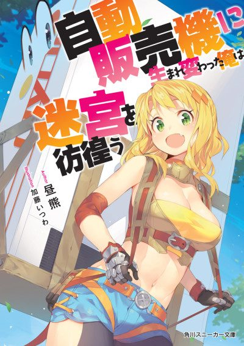

Reborn as a Vending Machine, I Now Wander the Dungeon
自動販売機に生まれ変わった俺は迷宮を彷徨う
We haven't found where the anime ends in the light novel yet.
6.2AniList score
—Animeter, no votes yet
36episodes, 3 seasons
3 seasons, 36 episodes
In airing order. Episode numbers on this site count straight through every season, so season 2 starts at episode 13.
1
2023 · TV
Reborn as a Vending Machine, I Now Wander the Dungeon
Episodes1–1212 ep
2
2025 · TV
Reborn as a Vending Machine, I Now Wander the Dungeon Season 2
Episodes13–2412 ep
3
2026 · TV
Reborn as a Vending Machine, I Now Wander the Dungeon Season 3
Episodes25–3612 ep
Sources: AniList
More like Reborn as a Vending Machine, I Now Wander the Dungeon
 Manga Ch. 538.5
Manga Ch. 538.5
 Manga Ch. 707.0
Manga Ch. 707.0
 Manga Ch. 347.6
Manga Ch. 347.6
 Manga Vol. 67.5
Manga Vol. 67.5
 Manga Ch. 297.0
Manga Ch. 297.0
 Manga Vol. 58.1
Manga Vol. 58.1